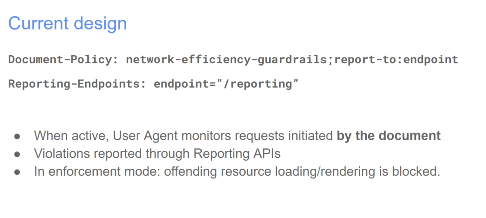
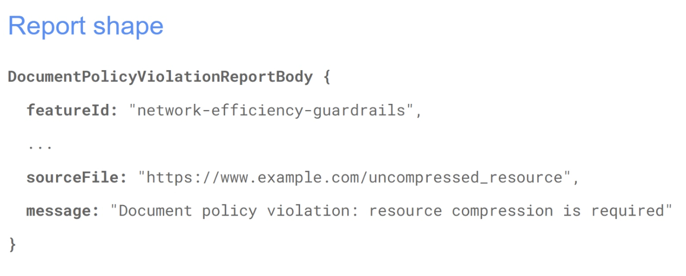
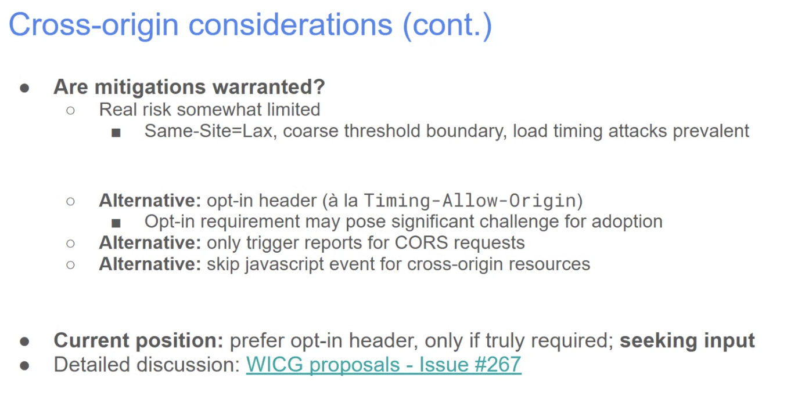
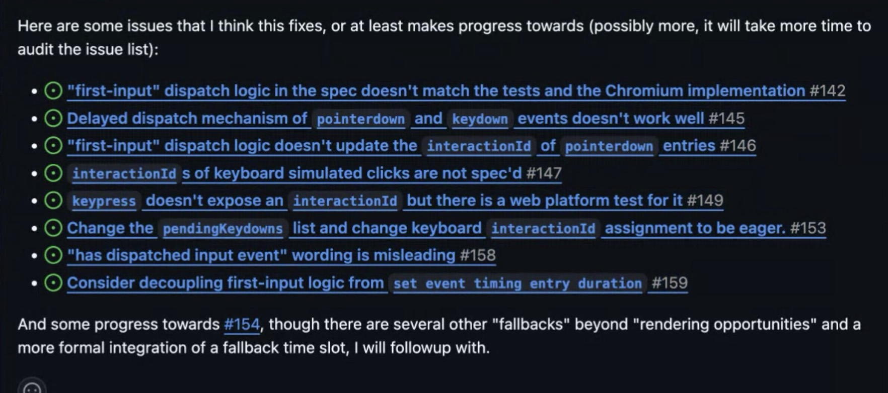

Participants
- Nic Jansma, Yoav Weiss, Noam Helfman, Franco Vieira de Souza, Michal Mocny, Bas Schouten, Tariw Rafique, Barry Pollard, Luis Flores, Giazomo Zecchini, Gouhui Deng, Scott Haseley
Admin
- Next meeting: Mar 26, 2026
Minutes
- Luis: previously presented on iframe performance control
- … shifted focus to the first policy: network efficiency guardrails
- … Got a new explainer, adopted in WICG, working on a Chromium prototype
- … Want to walk through design, share questions

height: 658.00px; margin-left: 0.00px; margin-top: 0.00px; transform: rotate(0.00rad) translateZ(0px); -webkit-transform: rotate(0.00rad) translateZ(0px);" title="">- .. criteria: uncompressed, large resources or uncompressed formats
- .. resource sizes: p90 from WebAlmanac. 200KB for images, 96KB for fonts, 100KB data URIs
- ..

height: 582.00px; margin-left: 0.00px; margin-top: 0.00px; transform: rotate(0.00rad) translateZ(0px); -webkit-transform: rotate(0.00rad) translateZ(0px);" title=""> - .. All different criteria fold to the same report
- … iframes are currently out of scope, breaking apart the inheritance and cross-document enforcement to a future proposal (probably document policy, reduced signal by default)
- … folded all criteria to a single report as the value comes from the platform providing a reasonable baseline, but consider an alternative with developer provided limits % XO security considerations
- .. cross-document interactions are out of scope, but same document monitoring can apply to cross-origin resources
- … Violation reports expose cross-origin compression status, sizes and content type - vector for login status detection (or other XO leaks)
- …

height: 320.36px; margin-left: 0.00px; margin-top: 0.00px; transform: rotate(0.00rad) translateZ(0px); -webkit-transform: rotate(0.00rad) translateZ(0px);" title=""> - … NoamH: wandering RE reporting & enforcement, compression is only for text based resources?
- … There are other types that are text based: SVG, JSON, XML
- Luis: The intention is to enumerate all text based types, I just called out the largest ones
- NoamH: Can you share how the size threshold was determined?
- Luis: Looked at data from the Web Almanac. Because this is an opt-in, the site is performance aware, so went for stricter. Looked at p90 for images and then made it a bit stricter
- Barry: percentiles on the web almanac are based on all the images of the page (e.g. large hero and small icons). May want to account for that.200KB isn’t huge for the hero image
- … Maybe the hero image should have a different criteria
- Luis: So separate evaluation based on the type of image? We got similar feedback before and thought about cumulative limits. Main concern was around probing
- Barry: or make the values tweakable in the spec
- Bas: Agree with Barry. WebAlmanac contains both high fidelity and low fidelity which need a different amount.
- … skeptical of magic numbers in general, as different types of websites need different thresholds. Concerned that this is not generalizable
- Luis: Thanks! Agree that a single value can’t address all contexts. We’re trying to call out the most egregious behavior that’s unlikely reasonable for any website.
- Bas: Feels risky. Needs to better understand the use cases
- Luis: Would having developer-defined limits be a better option?
- Bas: Developers already can do some of this using service workers
- Luis: Yes. Haven’t looked at Service Workers but they do expose some information
- Franco: We don’t have parameters to avoid cross origin risk. Should we restrict this to same origin with parameters?
- Luis: Big part of the motivation is knowing when things are bloating up at the document level. But cross origin resources would still load bloated and take down the experience
- Yoav: Cross-origin leak is a very meaningful one, not just theoretical. Not limited to just login status detection. Some insights have a lot of info about you can make an image or not based on demographic groups.
- ... If I load a website and load a resource from that website, I can know if you're in that category or not, having crafted an image to do that
- ... The leak is real, and we need to take it into account
- ... I think TAO allows you to get away from that, if you need something like TAO
- ... I don't remember if we let TAO allows Content-Type, maybe that's just CORS? You need either an opt-in or CORS requests.
- ... Seems like relying on CORS requests and forcing everything to be CORS seems the right way to go
- ... Seems more deployable than to add another opt-in header
- Luis: Header for CORS requests?
- Yoav: Just going for CORS requests is easy, the opt-ins are there
- ... But some requests can be CORS-enabled for some reasons
- ... For TAO you are allowed to look at Transfer Size, but I think Content Encoding and type are not behind it, but are behind CORS check
- ... We didn't want to expand semantics of TAO
- ... Exploring CORS limitation makes sense
- Luis: Discussion in WICG thread is covering it too
- Barry: Any consideration to multiple values?
- ... super-strict, medium, super-lax, adjusted to different page types
- Luis: Might run into same problem as choosing values
- Barry: Middle-ground, gives some flexibility and some complexity
- ... For my site I may want to be super-strict for example
- Philip: It seems there is much more value in reporting on resources outside your control (CORS) than on same-origin (which you could get from server logs, for example), but also much more risk. Might be better to figure out the CORS constraints rather than publishing without CORS.
- Luis: Repo now, please file comments or thoughts
- https://github.com/WICG/proposals/issues/267
- https://github.com/WICG/network-efficiency-guardrails/issues
- Yoav: Wanted to talk about LCP issue
- ... Cases where we're seeing LCP values in wild that are second or third candidate are only marginally larger than previous
- ... For example, difference in sub-pixels values, user isn't seeing
- ... When calculating width * height as part of LCP algorithm, a new image is suddenly larger than previous image
- ... Worse when a new paint is an old image, but maybe user interacts, results in tiny CSS changes, repaint, etc
- ... Looks identical to previous paint - 0.5 pixels diff
- ... Effectively there's no way for users to see the image is now larger than it used to be, or larger than other images, we should take it into account
- ... One option is to trim / round the width and height values before performing calculations in LCP algorithm
- ... Another would be a threshold of overall area of image, e.g. < 1%
- Bas: Even the subpixel differences, small increase, in spirit of LCP, it's not necessary relevant
- ... Feels to me >1% is trickier for progressively larger images
- ... Threshold maybe even larger than 1% is more intuitive
- ... LCP candidates > n% of previous
- ... Direction I'm leaning
- Barry: I think there's some vagueness in "non human visible"
- ... Yes for sub-pixel
- ... For some that have 3 hero images, sometimes it's 1, 2 or 3, makes no intuitive sense
- ... I'd go more lax, in spirit of LCP, page is "contentful" 1-2-5% bigger I think that's fine
- ... Hydration, fonts loading, multiple cases where this can happen
- ... I think we can be more lax than you're suggesting
- Michal: Two different problems. Same image, higher-res placeholder is loaded or something. Rounding of pixels, no different layout shift
- ... I'd say round up width and height.
- ... Second issue is grid of images, same size, arbitrary what LCP picks. First image should be representative -- 1/2/3% OK.
- ... Another perspective is Container Timing. Table of text content, better to take whole table, as opposed to first cell.
- ... For grids of images, I think it'd be worth a study to see when they all feel loaded
- ... Bigger question of what's best to represent is a UX problem that requires some study
- Bas: Don't disagree on Container Timing argument, but that's for CT to solve
- ... For LCP, I don't think we can define what's a grid of images
- ... Any news website, 3x images for articles, from DOM they could be related in any number of ways. Automated way feels difficult.
- Barry: I think separate conversation for Container Timing how it'd be integrated into LCP, can you use it to mark up LCP to be delayed.
- ... Let's deal with CT when it lands
- Michal: Agreed, just think it's not contentious to fix the sub-pixel sizing. vs. bigger change to make LCP less strict.
- Barry: Many scenarios could solve them in one go with a 1/2/3% change
- Yoav: Another representation of same bug is if sub-pixel difference crosses a pixel threshold, could be css contain.
- ... Or developer initially uploaded images that are roughly the same ratio.
- ... We will find other cases where this could fall into the same spot
- ... At the same time, it's hard for me to say 1% or 3% or 100px
- ... Some image size percentages don't represent what a user would notice
- ... What's a good process to determine what the thresholds should be? vs. just rounding-up or down
- Bas: Is perfect the enemy of good here? Any not-too-small threshold would solve most of the problems described here. Hard to think of a way that it would be "harmful" to pick a sub-optimal value
- Yoav: Let's pick something reasonable and tweak it over time if needed
- Michal: CLS uses 3px as threshold
- ... We could do candidate.x+3 and .y+3 as the new_size threshold
- Yoav: I can move forward with that spec change
Event Timing Spec changes - Michal
- Michal: Cleaning and removing redundancies
- ... Fixed a lot of issues

height: 782.00px; margin-left: 0.00px; margin-top: 0.00px; transform: rotate(0.00rad) translateZ(0px); -webkit-transform: rotate(0.00rad) translateZ(0px);" title="">- ... Now is a good time for PR reviews
- ... One of the specific things I've added clarity to, series of issues around Interop project, underspecified and tested in WPTs
- ... Added explicit update the rendering steps
- ... Queue in parallel a task to update the rendering which is always happening
- ... Flush events if it's done
- ... Hopefully that's more explicit
- ... LoAF https://github.com/w3c/long-animation-frames/issues/32
- ... Want to clean this up, add to HTML or just exposing to other Perf Entries
- ... Would like to use the same concepts as LoAF
- ... I want to build Event Timing as terms of Paint Timing Mixin, as LoAF does it manually
- ... Would also love to add that to Layout Instability API
- ... Timing of these things is not aligned but it could be
- ... Towards the direction of being able to chunk Perf Entries in terms of the navigation they're in
- ... All of these entires are for this paint, shown to user at same time, events --> layouts --> paints, clustered. Sorting doesn't help this.
- ... Trying to clean it all up, be on the lookout for related parts